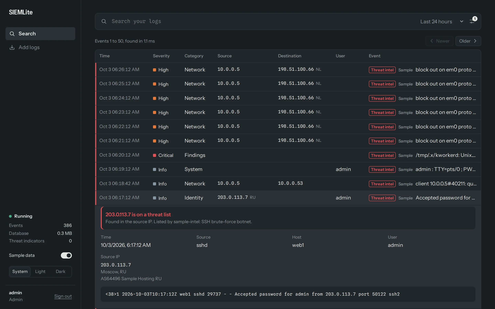
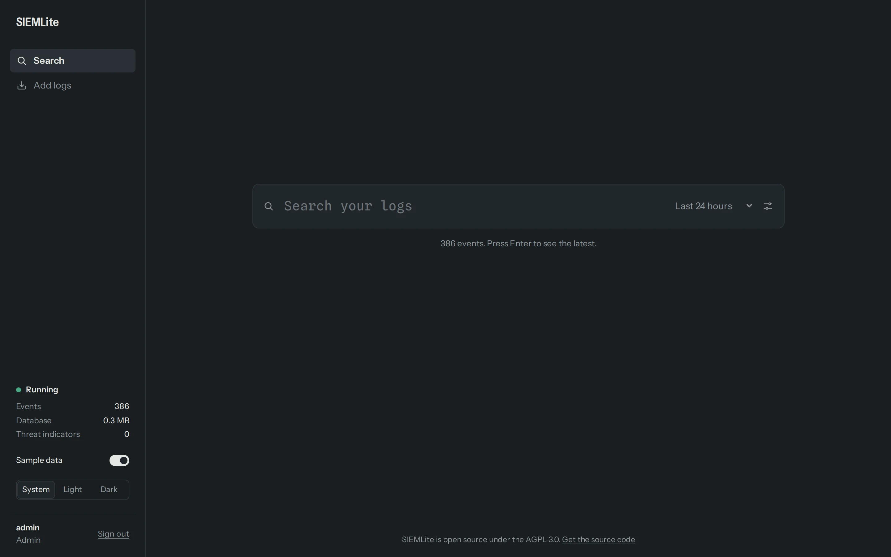
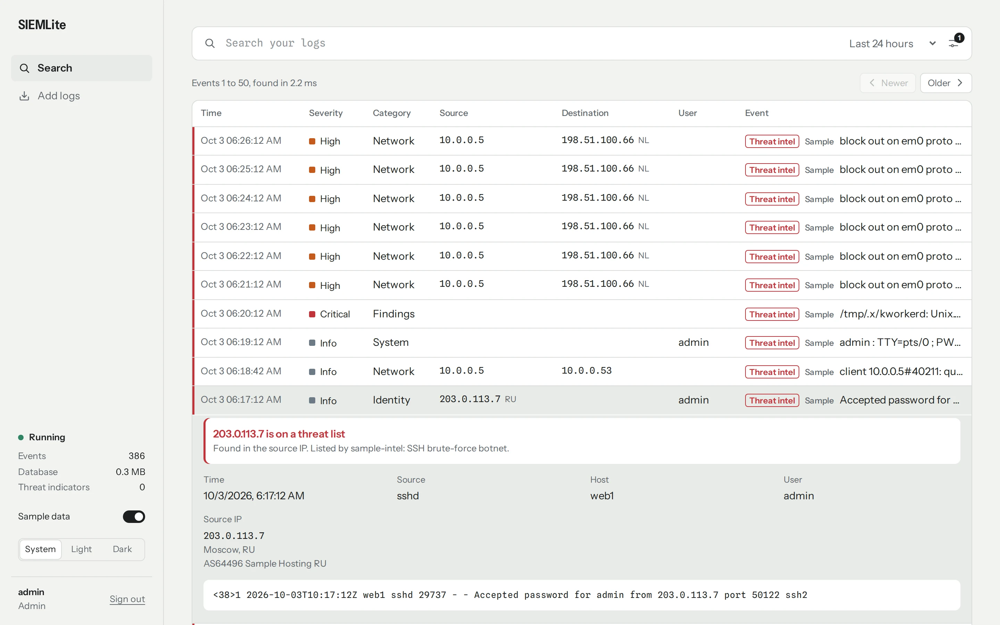
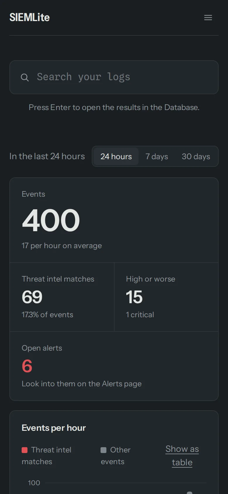

Collect, search and retain security logs with one executable and one SQLite file. No cluster, no agents to babysit, no cloud bill.
Open source · AGPL-3.0

These screenshots are from SIEMLite itself, running its built-in sample data: a day of normal traffic with an intrusion hidden in it. Turn on Sample data in the sidebar to explore the same events yourself.
The search page opens empty, with nothing but the field. Type words, “exact phrases” or
failed AND ssh, or press Enter to see the latest events. Filters for time, severity, IPs, users,
sources and countries are a click away.

Colour only ever means severity, so a red edge is impossible to miss. Every event is checked against threat intel blocklists as it arrives, and opening one explains the match in a sentence, next to the IP’s location, its network and the raw log line. Light and dark themes are both built in.

On a small screen, the table shrinks to the time, severity and message, and the sidebar becomes a menu.
Here, a search for "failed password" shows a brute-force attack against one server.

SIEMLite is built for homelabs, small companies and single services where a full SIEM stack is overkill.
Post syslog, JSON lines or plain text. SIEMLite detects the timestamp, hostname, IPs, user and severity, and keeps your original line verbatim.
Events are stored in the Open Cybersecurity Schema Framework model, so categories, classes and severities mean the same thing across every source.
SQLite FTS5 with phrase, boolean and prefix queries, combined with time-window, severity, category, IP and user filters.
Search, expand any event to see the raw log, paste or upload logs, and watch ingest health live. It's embedded in the binary.
Events are queued and written to SQLite in batched transactions (500 events or 500 ms, whichever comes first) over a WAL database.
Logs older than your retention window (30 days by default) are deleted in batches, and disk space is returned with incremental vacuum.
There is no plain-HTTP listener. A self-signed certificate is generated on first start, or bring your own.
Applications send logs with API keys that can do nothing else. People sign in with a username and password, as an admin or a search-only analyst.
Built on modernc.org/sqlite, so it cross-compiles cleanly and ships as one static-friendly binary.
From clone to first search in about a minute. Requires Go.
git clone https://github.com/justwaters/SIEMLite.git cd SIEMLite go build -o siemlite . ./siemlite
On first start SIEMLite creates siemlite.db, a self-signed certificate, and an admin user whose password is printed once. Copy it.
Sign in to the UI at https://localhost:8443.
./siemlite keys create -name myapp
Keys can only send logs. Add people with ./siemlite users create -username alice -role analyst.
# send a log file curl --cacert siemlite.crt -X POST \ 'https://localhost:8443/api/v1/logs?source=myapp' \ -H "Authorization: Bearer $SIEMLITE_KEY" \ --data-binary @app.log # or send structured OCSF events curl --cacert siemlite.crt -X POST https://localhost:8443/api/v1/events \ -H "Authorization: Bearer $SIEMLITE_KEY" \ -d '[{"category_uid":3,"class_uid":3002,"severity_id":4, "message":"Failed password for root","src_endpoint":{"ip":"203.0.113.7"}}]'
Sign in to the web UI with your username and password and search by text, time, severity, category, IP or user. Search is for signed-in users only; API keys can't read logs.
Four endpoints. JSON in, JSON out.
| Endpoint | Who | Purpose |
|---|---|---|
POST /api/v1/logs | API key | Raw log text, one entry per line (syslog, JSON lines, plain text) |
POST /api/v1/events | API key | Array of OCSF events |
GET /api/v1/search | signed-in user | q, start, end, severity, category, src_ip, dst_ip, user, limit, offset |
GET /health | public | Up/down for load balancers; counts and queue state when signed in |
A log store is a juicy target, so SIEMLite starts locked down.
The server only speaks TLS 1.2+. There is no HTTP port to forget to close.
An app that can write logs can't read them. A compromised app key doesn't expose your history.
Passwords are stored as bcrypt hashes and API keys as SHA-256 hashes. Revoke a key instantly with siemlite keys revoke.
Early-stage project. Client-certificate (mTLS) verification and per-key rate limiting on log ingest are not implemented yet.